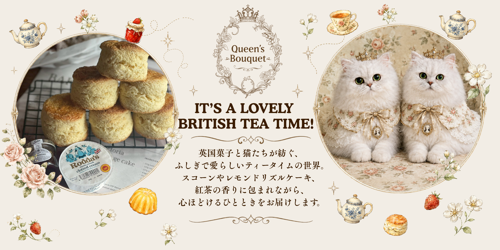
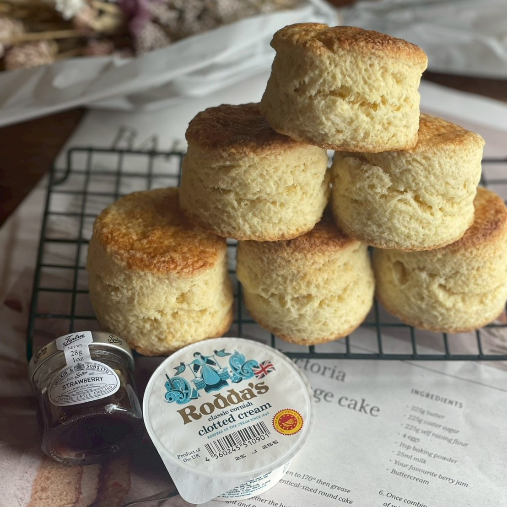
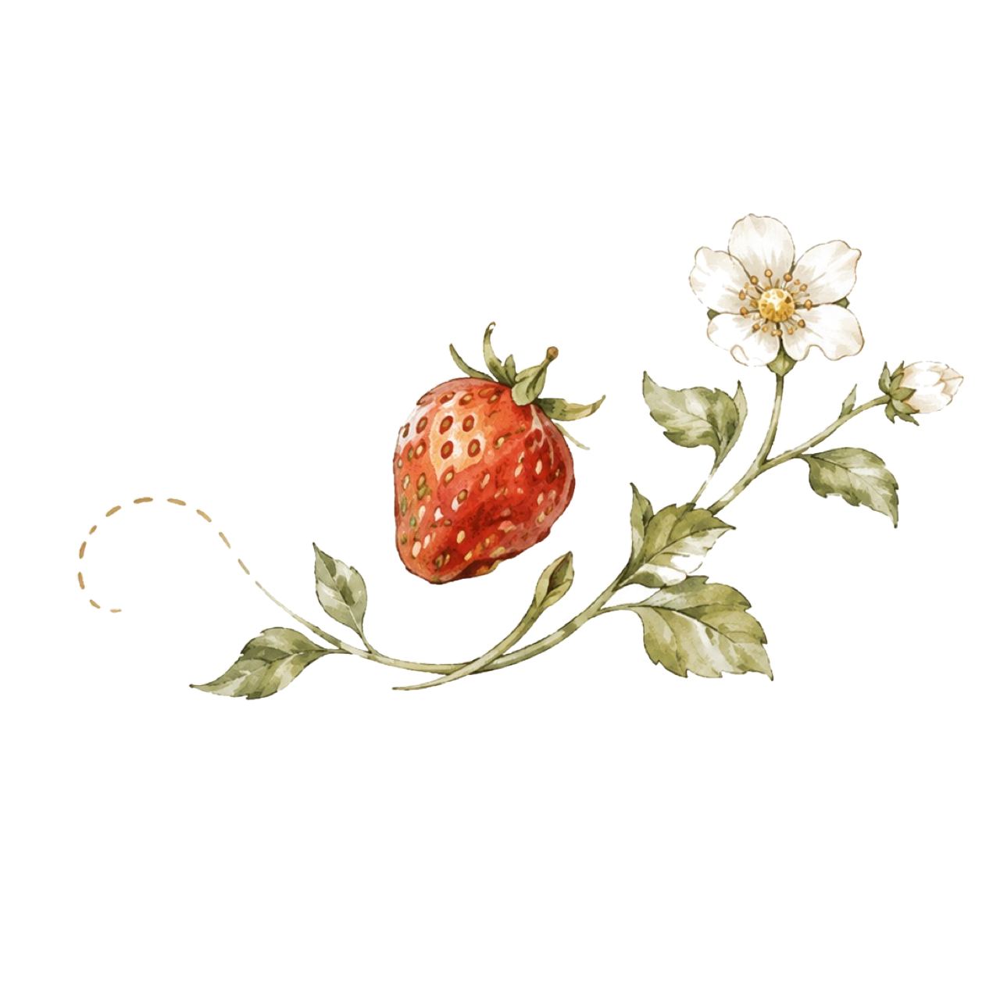
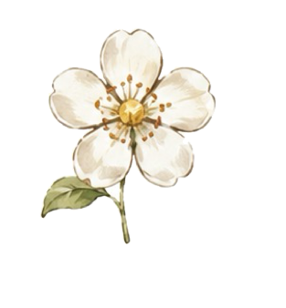
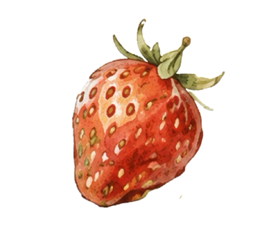
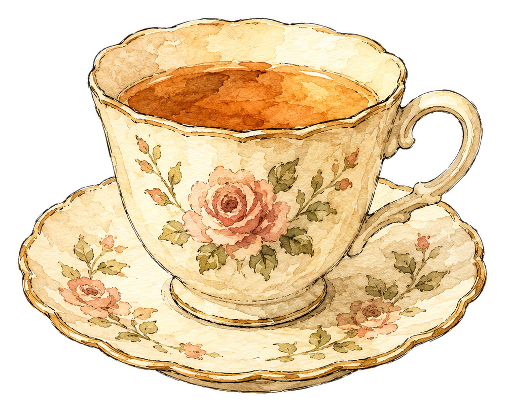
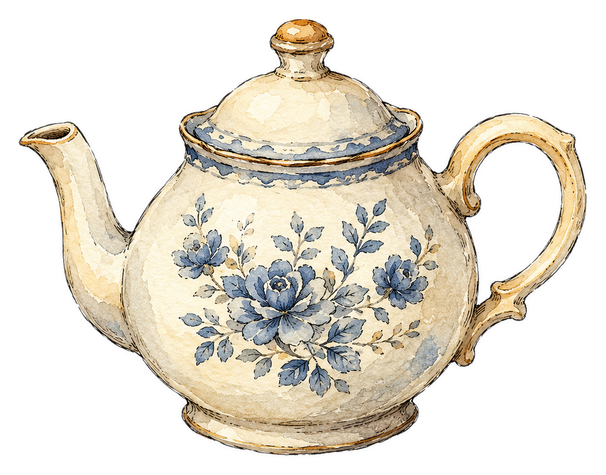
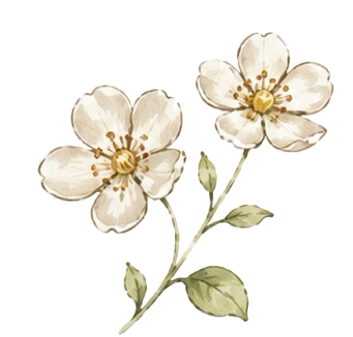

Shop Information
Queen’s Bouquet
クイーンズブーケ
- 住所
- 千葉県茂原市粟生野3445-4
- 営業
- 金曜 ネット予約商品受取日 土曜 店頭販売・ネット予約商品受取日 11:00–17:00 日曜 ネット予約商品受取日
- ご案内
- 土曜日は、予約なしで単品商品をご購入いただけます。セットはネット予約限定です。単品のお取り置きもネット予約から承ります。
- 駐車場
- 5台
臨時休業の場合があります。最新情報はInstagramをご確認ください。
Tea Time Fortune
白猫たちが案内する、Queen’s Bouquetの小さな占い部屋です。